YOU'VE LANDED ON PRASHANTH REDDY'S PROFILE
Data Engineer / Data Analyst
Data Engineer / Data Analyst
Hi there 👋 and welcome to my space! I'm Prashanth Reddy, and this is where you can dive deeper into what I do, what I've been working on, and what I'm passionate about. If you'd like to get to know me beyond work, head over to . Otherwise, let's talk work!
I enjoy building end-to-end data solutions - from solving data ingestion and storage challenges to building dashboards and analytical solutions that help businesses make better, data-backed decisions.
I want to be sitting at the intersection of business and technology, understanding real-world problems, and turning them into practical solutions that create value.
I'm originally from Bangalore, India - for those that don't know, it's considered the "Silicon Valley of India." It's where startups are born and you're always surrounded by talk of innovation and technology; a place rich in cultural diversity, known for its music and food, and one that will always be close to my heart.
I worked as a Data Engineer at IQVIA, Bangalore for three years before moving to Dallas for my Master's in Business Analytics and AI at The University of Texas at Dallas. It's safe to say the past five years have given me great clarity on what I love working on: (a) I love solving problems, and (b) I love working with data.
My long-term goal is to work in an industry that aligns with one of my passions - gaming, sports, music or technology. I value discipline and continuous learning, and love surrounding myself with people who push me to become the best version of myself every day.
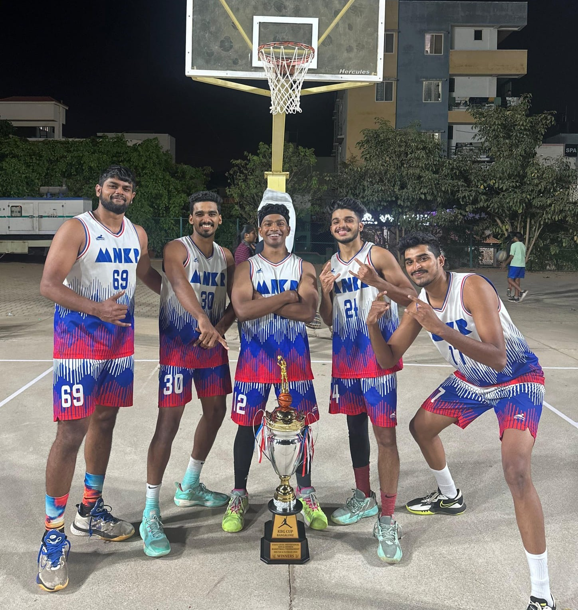
I've been playing ball since the age of 11, and I've had the opportunity to represent various teams at the national, state and inter-school/university level. I've also had the opportunity to lead my University team and an A-division club in Karnataka as captain - which I believe makes me a semi-professional player 🙂 (a retired one though :/)
The game of ball has taught me a great deal about teamwork, grit, discipline and the willpower that's needed to never quit until the final whistle. There's nothing more that I miss right now than competing at a high level in the sport, but life has taken a different course and I'm excited for new challenges that lie ahead!
While I enjoy sports games such as FIFA or NBA 2K the most, I also indulge in multiple First Person Shooter or Role Playing Games such as Fortnite, Horizon Zero Dawn, Amazing Spiderman, and other popular names in the gaming space. Honestly though, I love playing any sort of game and like trying them all out!
When I look back to times as a kid, I remember growing up playing the online Pokemon game a lot (if you know about this please send me a message, we have GOT to talk); Nintendo games such as Pokemon Emerald/Sapphire/Ruby, Beyblade V-Force; and a bunch of other games that form core memories!
There's almost nothing I enjoy more than watching sports. I follow Football (Soccer), Basketball, Cricket and Formula 1 the most, and I consciously have to make the effort to not get pulled towards more sports, but I like to keep myself up to date with news from different sports!
I'm a big Manchester United fan, as you can clearly see from the picture below.
I truly believe that if I have my earphones on and my music playing, I can take on anything in the world. I spend a lot of my time with Spotify running in the background - while studying, working out, driving or even doing chores. I have playlists for each mood and my music taste is all over the place - House, Rock, Alternative, R&B, Rap, Hip-Hop, Pop, Bollywood and Regional South Indian music. I vibe to almost any genre, sometimes even when I don't understand the lyrics 😝 and I highly value people that introduce me to new music :)
FBS Group
Jul 2026 – Present
IQVIA
Aug 2021 – Jun 2024
Aug 2024 – May 2026
The University of Texas at Dallas
Aug 2017 – Jun 2021
R. V. College of Engineering, Bangalore
Selected work. Tap a card to view the full write-up.
Graduate Capstone · MS BA & AI, UT Dallas
View details ▸Graduate Capstone Project, MS Business Analytics & AI, UT Dallas
FleetPride, a heavy-duty truck parts distributor, had no centralized view of customer purchasing behavior. Retention efforts only started after an account had already gone quiet. We built a proactive system that scores every customer's churn risk, explains why they're at risk, and tells branch managers who to call and which intervention to use.
We used 32 months of internal data (Jan 2023 to Aug 2025) from three sources across three branches: 419K transaction records, 231K product-category records, and 16K service work orders. From these we engineered 21 behavioral features per customer across five areas: lifetime history, purchase frequency, recent activity, spend trajectory, and service engagement. A customer counted as churned if they made no purchase in the six months after the observation cut-off.
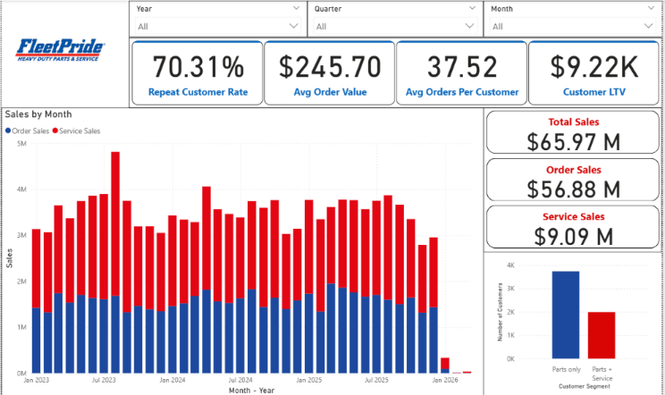
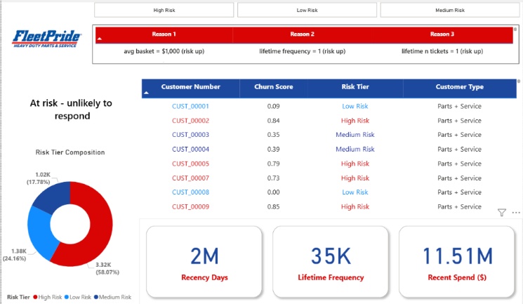
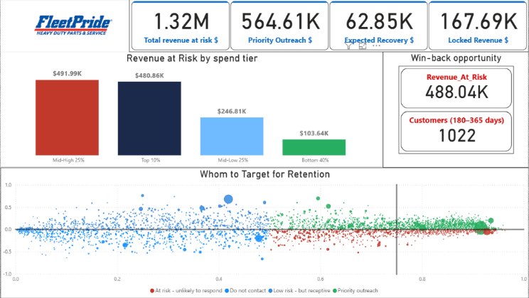
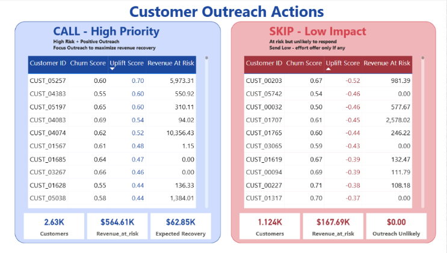
Alteryx AI Datathon · 5-hour competition
View details ▸Work done for a 5-hour AI Datathon competition hosted by Alteryx. Tools: Alteryx (data processing), Gamma AI (slide deck).
RSM is planning its next company-wide conference and requires a data-driven recommendation for the optimal location based on employee proximity, travel logistics, and cost efficiency. Using employee listings and flight data, analyze centrality, accessibility, location suitability, and travel costs to suggest the most optimal location.
Calculate three scores for each location and combine them into a weighted final score, then rank the results.
Proximity Score (35%) - using the employee dataset, count how many people would need to travel to each location; the location requiring the fewest travelers scores highest.
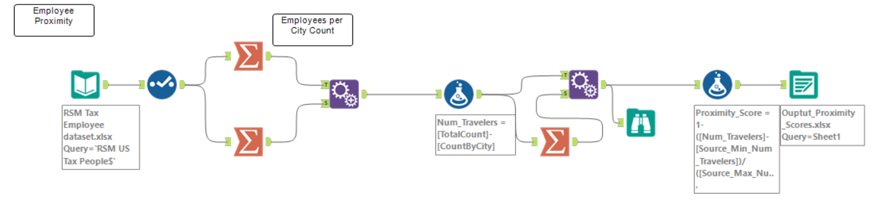
Cost Efficiency Score (25%) - joining the flight and employee data, compute the cost of flying people out of each location. Bill rate is included so we reduce movement of employees from cities with a higher average bill rate, making efficient use of their time.
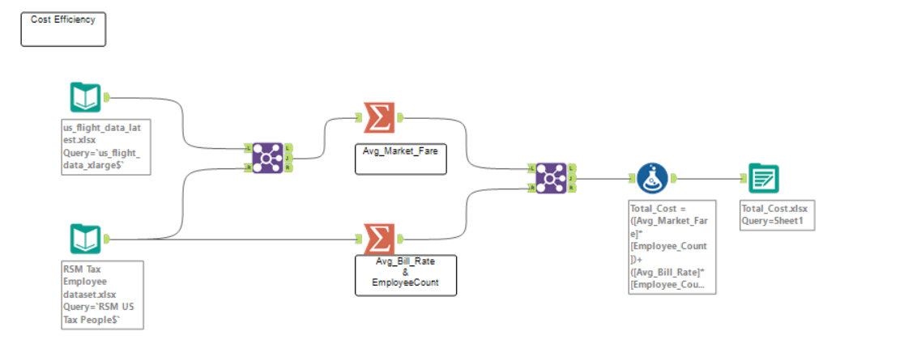
Flight Connectivity Score (40%) - due to the time limit during the competition, we asked an LLM (ChatGPT) to rate airport connectivity for each city on a 0-1 scale.
Dallas emerged as the optimal city to host the conference. It makes practical sense too: Dallas is centrally positioned relative to the other cities, minimizing overall travel, and the higher concentration of companies in the area makes the recommendation both data-driven and realistically actionable.
GitHub Repo ↗Big Data Project
View details ▸Tools: Hadoop + Power BI
Accidents caused by large trucks remain one of the leading causes of injuries and deaths in the United States. The objective is to identify risky commercial truck drivers nationwide using the Hadoop ecosystem to store and process the data.
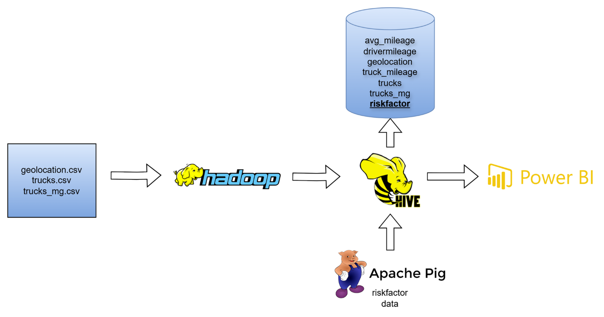
The risk factor for each driver is calculated as:
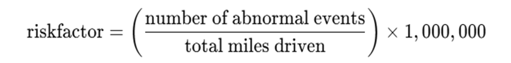
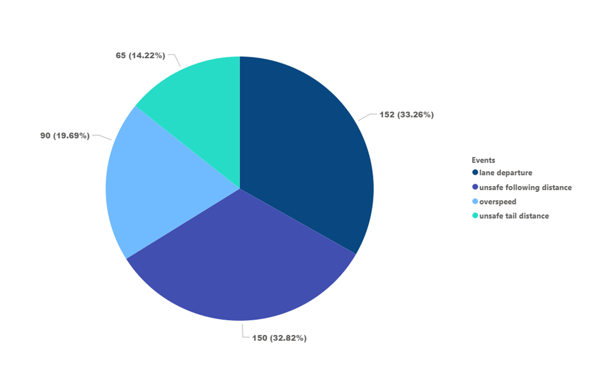
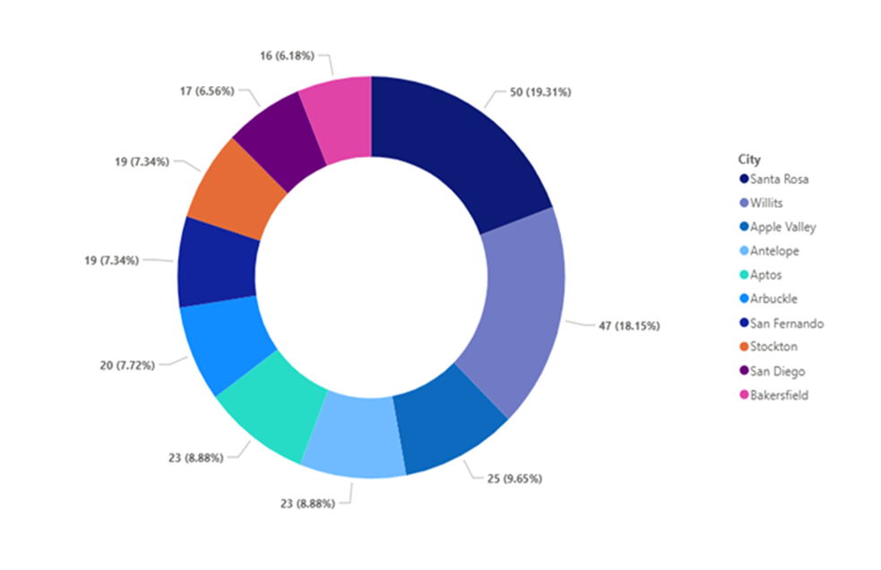
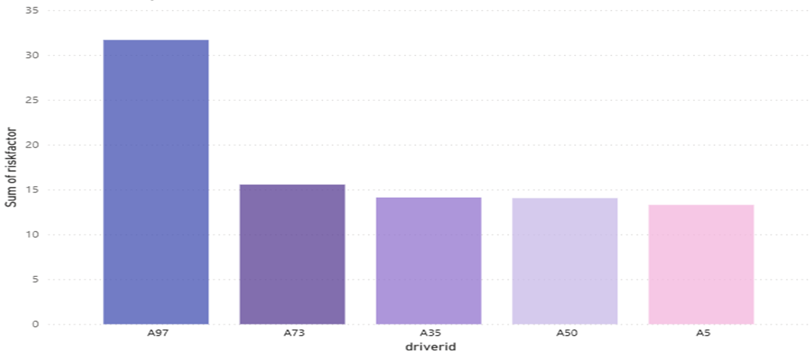
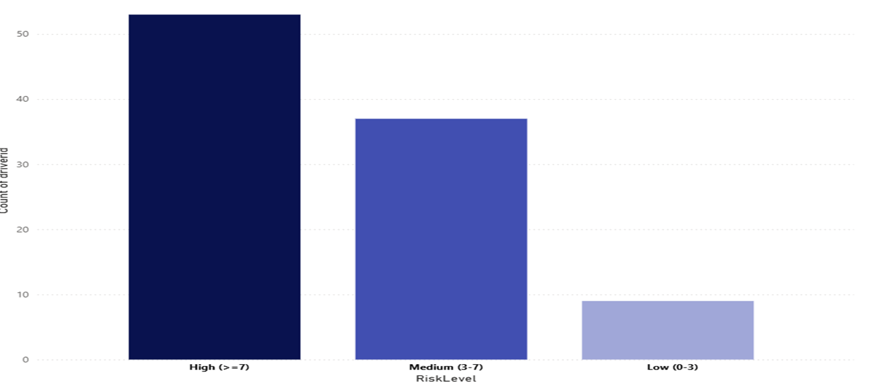
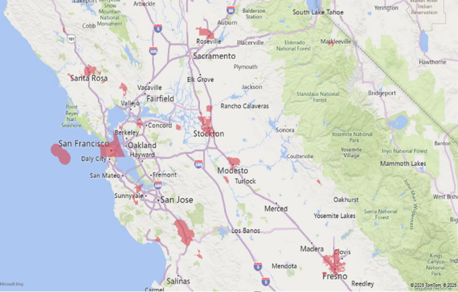
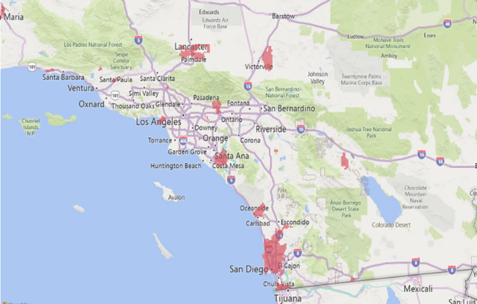
Research Paper · Creativity & reasoning via gamification
View details ▸Evaluating AI Creativity and Reasoning Through Gamification
AI models today can generate text, write code, and solve complex problems. But an important question remains: how creative are these systems, and how well can they reason when collaborating with other AI agents? To explore this, we designed an experimental benchmark that evaluates the creativity and reasoning abilities of large language models through gamification, using the word-association game Codenames as the testing environment.
We evaluated GPT-4 and Gemini 2.5 under different prompting conditions.
We built a custom Python Codenames simulation where LLMs played against each other as Spymaster and Guesser agents on a standard 5 x 5 board (25 words: team targets, neutral words, and a single assassin word). The Spymaster generated a one-word clue with a number (e.g. "Bridge: 2"); the Guesser identified words based on that clue. We tested four prompting configurations - No Prompt (baseline), Spectrum Lens, Three Bridges, and Role Shifting - across 100 games per model each, for 600 total runs.
Prompting does not necessarily improve accuracy, but it significantly changes how AI models think and reason. Win rates stayed relatively stable (GPT-4 ~62.8% baseline / ~61.9% prompted; Gemini 2.5 ~55.3% / ~56.7%), while behavioral metrics shifted a lot:
These results suggest prompting acts as a cognitive framing mechanism, shaping how models explore conceptual relationships rather than simply improving task accuracy.
Paper: "Prompting Creativity: Analyzing the Impact of Prompt Engineering Philosophies on AI Gameplay in Codenames"
Read the Paper ↗Applied Machine Learning project
View details ▸Part of the Applied Machine Learning course project
The project predicts annual medical costs for individuals based on their demographics, health conditions, lifestyle, and insurance attributes. The dataset contained 100,000 samples and 54 features, providing a comprehensive basis for regression modeling and healthcare cost analysis.
The model effectively captures health, lifestyle, and socioeconomic influences on medical costs; SHAP confirmed transparency and trustworthiness; and the entire workflow is containerized, version-controlled, and ready for API or dashboard integration.
GitHub Repo ↗Roles and moments where I led. Tap a card to read more.
Data Visualization Club, JSOM · May 2025 - Apr 2026
View details ▸Data Visualization Club of JSOM, UT Dallas · May 2025 - April 2026
Envision is the Data Visualization Club of JSOM, UT Dallas. I started as an officer in my first semester and was promoted to President in my third. It gave me the opportunity to lead an amazing team and an important organization within JSOM, hosting data and technology workshops and competitions that attract hundreds of students from across the university. The club has given me some great friends and a lot of memories to take with me :')
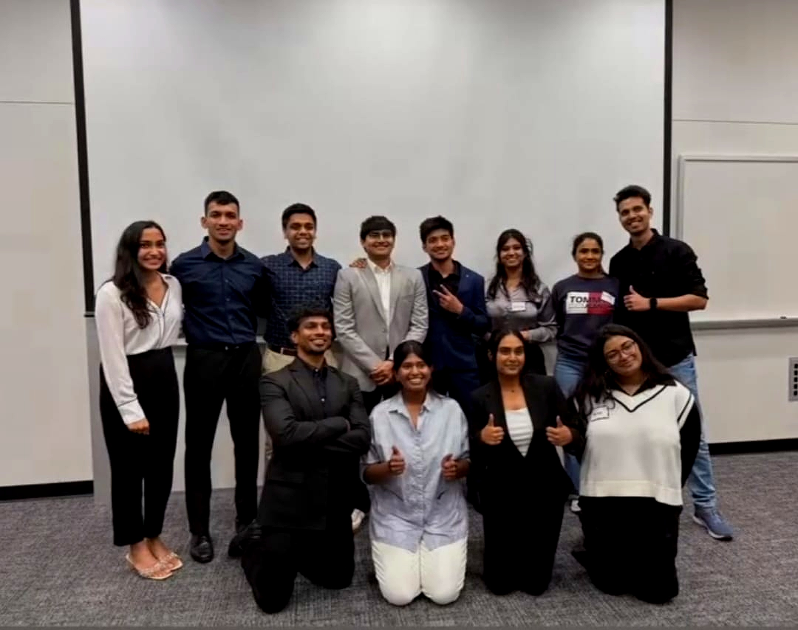
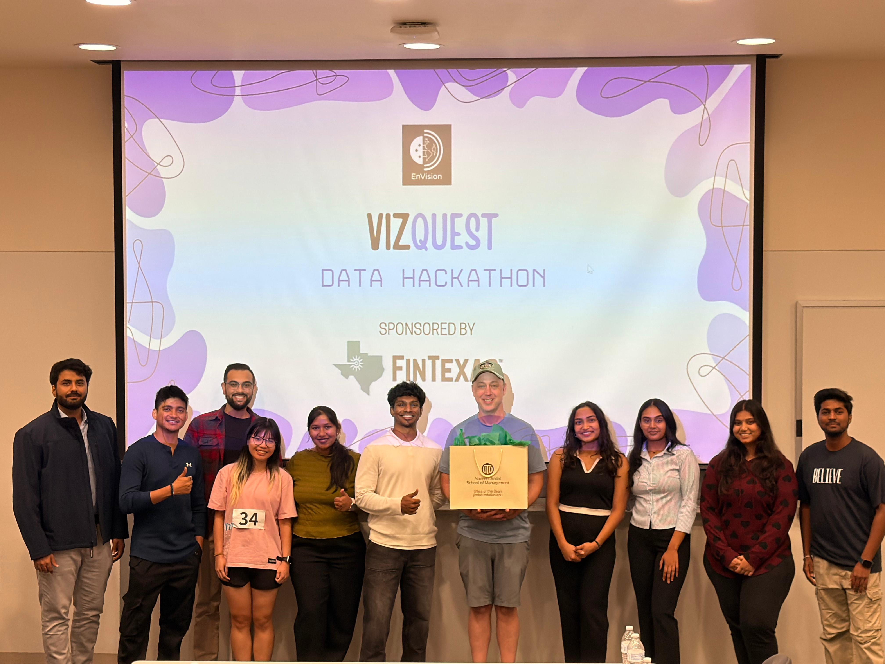
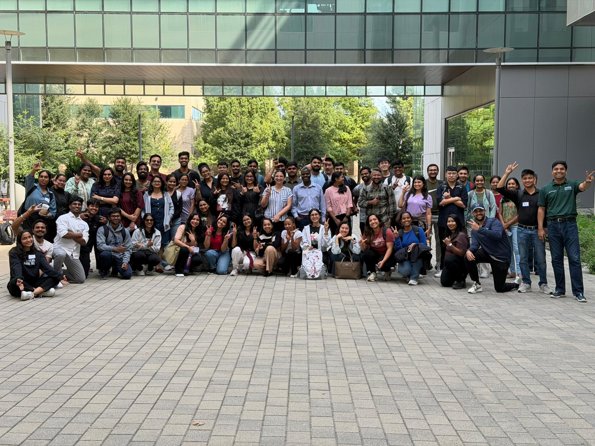
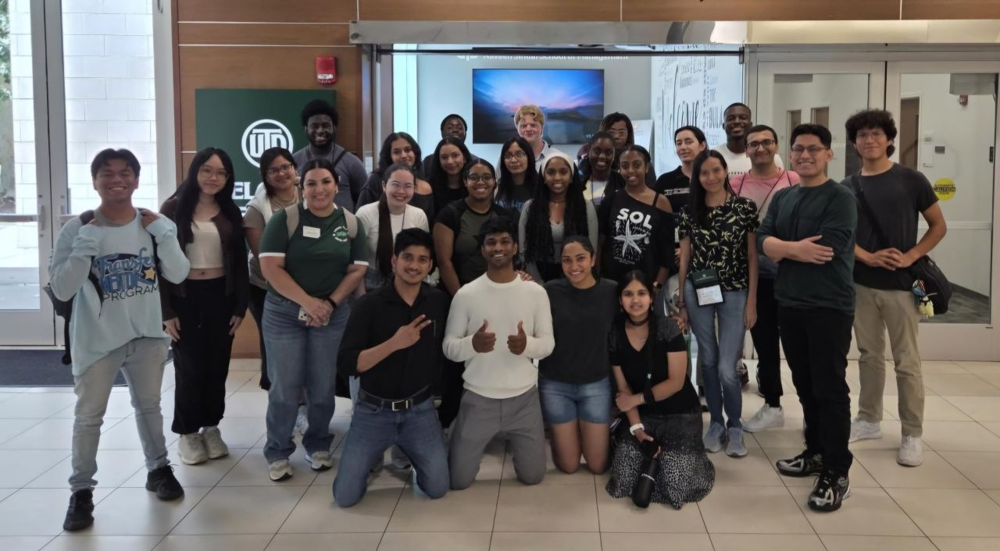
Naveen Jindal School of Management · B/O 2026
View details ▸Naveen Jindal School of Management (JSOM), UT Dallas · B/O 2026
I had the honor of graduating as a JSOM Nash Leader in May 2026! The Nash Leaders Program is designed to develop the leadership potential of high-performing students by providing opportunities to engage with C-suite executives and business leaders, learn from their journeys, and gain insights into effective leadership.
To qualify for the program, students must hold a leadership position in a JSOM student organization and rank within the top 20% of the JSOM cohort by GPA.
Being part of this program gave me the opportunity to learn from accomplished leaders, hear about their career journeys firsthand, and reflect on what it means to lead with purpose and impact. I'm grateful to JSOM and everyone involved for the experience and the lessons I'll carry forward in my career.
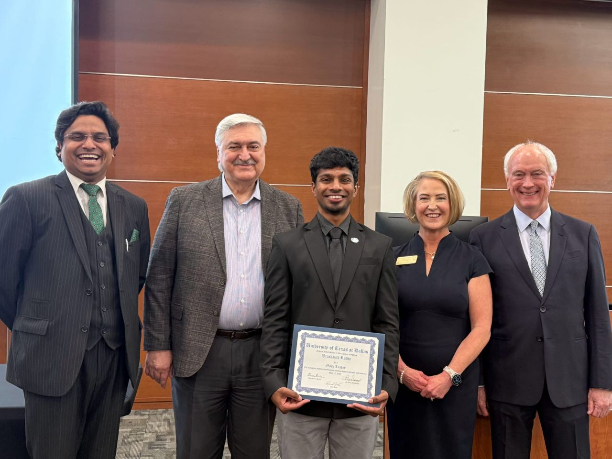
Nash Leaders Program ↗Let's build something. Reach me here: